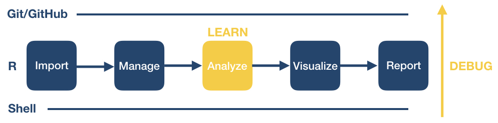

Conclusion
Overview
Teaching: 15 min
Exercises: minQuestions
What do I do after the workshop to apply what I learned and keep learning more?
Where can I learn more coding skills?
How do I deal with coding errors (i.e. debug)?
What other coding concepts should I learn?
Objectives
Learn how to get help with code via the Internet.
Learn about other coding concepts that would be good to learn in the future.
Where to go from here?: Departing on your own coding journey

We have come to the end of this workshop. You learned some basic procedures for importing, managing, visualizing and reporting your data.
As you continue on your coding journey, two things will happen:
- You will encounter bugs and need to figure out how to solve them (“debugging”), and
- You will want to learn new data processing and analysis techniques.
As we complete the course, we want to share with you some tips and tricks that have helped us on our own programming journeys.
Get help and connect
We want to be a resource for you after the workshop ends, and we also want you all to be a resource for each other. Here are ways we can help, let’s discuss what would work best for you to be able to keep in touch and get help/guidance as needed.
First, you can email us whenever you want with questions! (zena.lapp@duke.edu; christine.markwalter@duke.edu; erica.zeno@duke.edu)
For additional consistent support, here are some ideas we could implement:
- Whatsapp group
- Pro: already commonly used
- Con: can’t create conversation threads and difficult to answer more complicated questions
- Slack
- Pro: can have different channels for different topics, and can use threads for specific conversations
- Con: not as widely used
- Monthly virtual office hours
- Pro: can discuss complex topics and questions more easily
- Con: no immediate help, and might not work with everyone’s schedule
- Follow-up workshops
- Pro: can discuss more detailed topics
- Con: not regular, and different learners may have different specialized topic interests
Dealing with coding errors
Even well seasoned coders run into bugs all the time. Here are some strategies of how programmers try to deal with coding errors:
- Don’t panic. Bugs are a normal part of the coding process. Think of each bug as a great opportunity for becoming better at writing code. When you’re debugging, you’re being a detective and trying to figure out what’s wrong. Think of it as a fun mystery to solve! You’ll become a better detective the more you practice.
- First, determine which type of problem you are having: either the code tries to run but returns an error message, or your code runs without error but you did not get the result you expect.
- If you are getting an error message, read the error message carefully. Unfortunately, not all error messages are well written and it may not be obvious at first what is wrong. Try to determine if you are getting a syntax error or a runtime error.
- A syntax error is when the program doesn’t understand how to run the code you provided. In R, these error messages usually contain the word “unexpected”. Often these are because of a typo. Check that your parentheses and quotes are balanced and check that you haven’t misspelled a variable or function name. It’s difficult to identify the exact location where an error starts so you may have to look at lines before the line where the error was reported. In RStudio, look at the code coloring to find anything that looks off. RStudio will also put a red x or an yellow exclamation point to the left of lines where there is a syntax error.
- A runtime error is when the program understood all the commands you wrote, but ran into an error when trying to run them. If you are running multiple commands, try running each on its own. Before each command, check that you are passing the values you expect; and after each command, verify that the results seem sensible.
- If you have been able to find parts of your code that cause the error, take some time to review the documentation for the functions or commands you are using. Even for functions or commands you’ve used before, there may still be parts of the documentation that you just haven’t needed to use before. See if there are examples in the documentation that you can compare your own code to. Most programs make finding the documentation pretty easy.
- R: Typing a question mark immediately followed by a function name, i.e.,
?<command>(e.g. ?print), pulls up the R documentation for that function. This provides a function description, as well as in-depth information about each function argument including its purpose, default and other available options. - Shell: Using
man <command>or<command> --helppulls up the manual page with more information. To quit, clickq. - Git:
git helpdisplays help information about git. Read more here.
- R: Typing a question mark immediately followed by a function name, i.e.,
- Search online for the error message along with the function that is not working. Most likely, someone encountered this error before you and the examples online will help you figure out your own issue.
- Perform a general online search for what you are trying to do, e.g., “how to import a comma separated spreadsheet into R”, “how to delete a directory from the command line”, “how to merge conflicts in git”. Typically, you will find step-by-step online documentation that you can adapt for your own purposes.
Debugging code
If searching for your particular code problem hasn’t turned up a solution, you may have to do a bit of debugging. Debugging is the process of finding exactly what caused your error, and changing only what is necessary to fix it. There are many strategies to debugging code. Consider checking out the following resources to learn more about it.
- “5 Essential Tips to Debug Any Piece of Code” by mayuko [video, 8min] - Good general advice for debugging.
- “Object of type ‘closure’ is not subsettable” by Jenny Bryan [video, 50min] - A great talk with R specific advice about dealing with errors as a data scientist.
Asking strangers for help
If you are unable to determine what’s wrong with your own code, the internet offers several possible ways to get help: asking questions on programming websites, interacting with developers on GitHub, chatting with other programmers on Slack, or reaching out on Twitter. If you’re intimidated by asking people on the internet, you can also reach out to people at the University of Michigan. You don’t have to do this all on your own. However, there are some important things to keep in mind when asking questions - whether it be to people on the internet, or to people at the university. You may want to consider these tips to help you increase your chances of getting the support you need:
- First, provide a brief summary of what you are trying to accomplish. You may have been working on the problem for a long time but the person you are asking will have no idea of your work until now. Keep it short and focus on your ultimate goal rather than just talking about your code. Sometimes there may better ways to solve the problem than the solution you’ve attempted this far.
- Then, briefly mention what you’ve tried so far. Maybe mention the search terms you used online or the specific documentation you’ve looked at. It should be clear that you’ve at least tried to solve the problem yourself first (after all, that’s the way you’re most likely to learn the most).
- Now, describe the problem you are having. Don’t just say “the code doesn’t work.” Are you getting an error? If so, what is the exact message? Are you getting unexpected results? If so, then what exactly were you expecting to happen?
- Next, include a minimal, reproducible example. This means you need to take away any parts of your code that aren’t necessary to create the error you are dealing with. Often, this may mean starting a branch with a new program just for testing. Make sure the code itself can be run by including or randomly generating some sample data. If there’s no way to copy/paste and run the code on a computer, that means the individuals you are asking for help need to run the code in their head which is a lot harder than running code on a computer. Clearly describe the desired behavior so that possible solutions can be tested and verified. In the process of creating a minimal, reproducible example, it is possible you will solve your own problem.
- Keep in mind the person helping you is unlikely to know the solution off the top of their head. Even the best programmers don’t have all the documentation memorized. But with time, programmers get better at solving problems based on their past experiences. By providing a reproducible example, you allow someone else to use their debugging skills to help you rather than making them guess what might be wrong.
- If it’s not obvious from your question, it can be very useful to include details about the operation system you are using and the versions of the programs you are currently running. Sometimes, things work differently as programs change over time and the code you found on the web may have been for a different version.
- Make it easy to reply. Try to ask one specific question. Asking a bunch of questions takes more time and energy to respond, and you want to minimize the work you create for the kind stranger who is helping you out. Also, if you include sample data with which to test possible solutions, then someone can verify their suggestion works before replying. This will help minimize back-and-forth with your helper which can take time.
- Finally, recognize that asking a good question is an art, not a science. It is something you will get better at with more time. You can also get better by trying to help other people with their questions. That way, you can see what information is necessary to really help someone. It’s a delicate balance between providing enough detail so it’s possible to intelligently respond yet keeping things short enough to not overwhelm your helper (more isn’t always better).
Learning new code
Free open-source programming languages such as bash, Git and R are constantly evolving. As you try out new data processing and analysis techniques, you will continue to learn new coding logic, concepts, functions, and libraries. Widely available user tools and documentation are a main benefit of free open-source software.
In the following, we list some strategies and resources we find useful. As you move forward, you are likely to identify other resources that fit your own learning style.
General
- Stack Overflow: Users post questions or errors and other users respond. (This is a great place to search for help but might not be the best place to ask a question if you are a beginner.)
- Cheat Sheets!! You can find many different cheat sheets for entire languages or specific libraries or even functions online. Just search for “
cheat sheet" to see what is available. We have listed a few below. - Study other people’s code. Increasingly, people publish their code (e.g., in a GitHub repository) to facilitate reproducible research. You can take someone else’s code as a starting point and adapt it to your own needs.
- Other people in your department or lab are also great resources for asking about specific coding problems.
R
- RStudio Community Forum. This is a site that is welcoming to new R users where you can ask R programming questions.
- Search R Package Documentation. This site is very useful when you see someone using a function but don’t know which package it comes from. This site lets you search across the help pages for all R packages.
- RStudio Cheat Sheets. A good collection of cheat sheets to print out and hang at your desk. For example: base R, tidyverse, and ggplot
- If there is a specific R package that you want to use (e.g. mikropml for machine learning analysis), you can use the vignettes to help you learn the basics of the package. You can search for the vignette online, or use the
vignette()function in R to open them.
R Markdown
Some important advanced coding concepts that you will want to learn if you continue coding a lot
There are some coding concepts that we did not have time to cover in this workshop, but are important to learn as you continue on your journey and begin to perform more sophisticated data analysis projects. While we have not created resources for these topics, we provide some links to where you can learn more. Note that these are more advanced coding topics; you should be come comfortable with what you learned in the workshop before trying to delve deeper into these other concepts. However, you’ll likely come across situations where one of these will be useful, and that’s when you should learn it!
We’ve provided some links below, but feel free to search for other explanations and tutorials as well.
R coding topics
Some more advanced R coding topics include:
Here is a nice tutorial on conditionals, loops, and functions all together.
Domain-specific analyses
We encourage you to investigate domain-specific packages and software that will help you perform specific tasks related to your own research. The best way to find these packages is to either ask other people in your field and/or search for specific tasks that you would like to perform. If you’d like to perform the task in R, include that in your search (e.g. “find pairwise distances for DNA sequences in R” will help you find the R package ape which has a number of functions to perform phylogenetic and evolutionary analyses in R.)
Key Points
When it comes to trying to figure out how to code something, and debugging, Internet searching is your best friend.
There are several resources at the University of Michigan that you can take advantage of if you need help with your code.
We didn’t have time to cover all important coding concepts in this workshop, so definitely continue trying to learn more once you get comfortable with the material we covered.
There are often packages and tools that you can leverage to perform domain-specific analyses, so search for them!